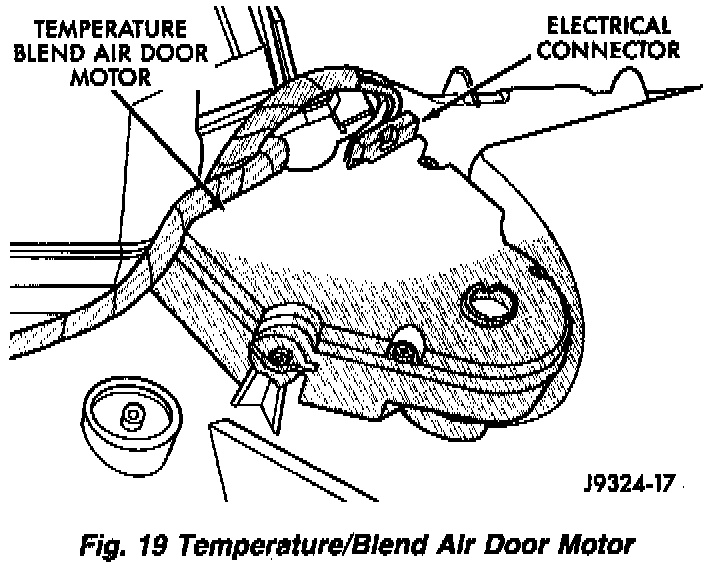

Blend Door Actuator Replacement
Fig.19 Temperature/Blend Air Door Motor:

REMOVAL
1. Disconnect the electrical connector.
2. Remove the retaining screws.
3. Remove the temperature/blend air door motor.
INSTALLATION
1. Position the motor over the door connection.
2. Install and tighten the retaining screws.
3. Connect the electrical connector.